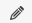

Presupuestos
Al ingresar a la pantalla de presupuestos, se le presentará la lista de presupuestos que han sido previamente cargados en el sistema.
Para cada fila de la tabla, es decir, para cada presupuesto, las opciones disponibles de edición o borrado se encuentran en la columna acciones 
Editar presupuesto
Para realizar la edición, haga click en el icono del lápiz al lado del presupuesto que desea editar.
Será conducido a una nueva pantalla donde se cargan automáticamente los datos del presupuesto seleccionado. Podra encontrar mas informacion acerca de la edicion de presupuestos en las pantallas siguientes.
Borrar presupuesto
Para realizar el borrado, haga click en el icono del cesto al lado del presupuesto que desea borrar.
al lado del presupuesto que desea borrar.
Se le pedirá una confirmación antes de realizar el borrado.
En caso que ya no quiera realizar el borrado, el botón cancelar lo llevara nuevamente a la lista de presupuestos sin haber borrado el presupuesto seleccionado.
En caso de aceptar, se borrará el presupuesto de la lista, y será redirigido a la página actualizada de la lista de presupuestos.
Agregar presupuesto
Para agregar un nuevo presupuesto, haga click en el vínculo en la mitad superior de la pantalla “Agregar presupuesto”
Será conducido a una nueva pantalla donde se encuentran la información disponible para cargar los datos del nuevo presupuesto.